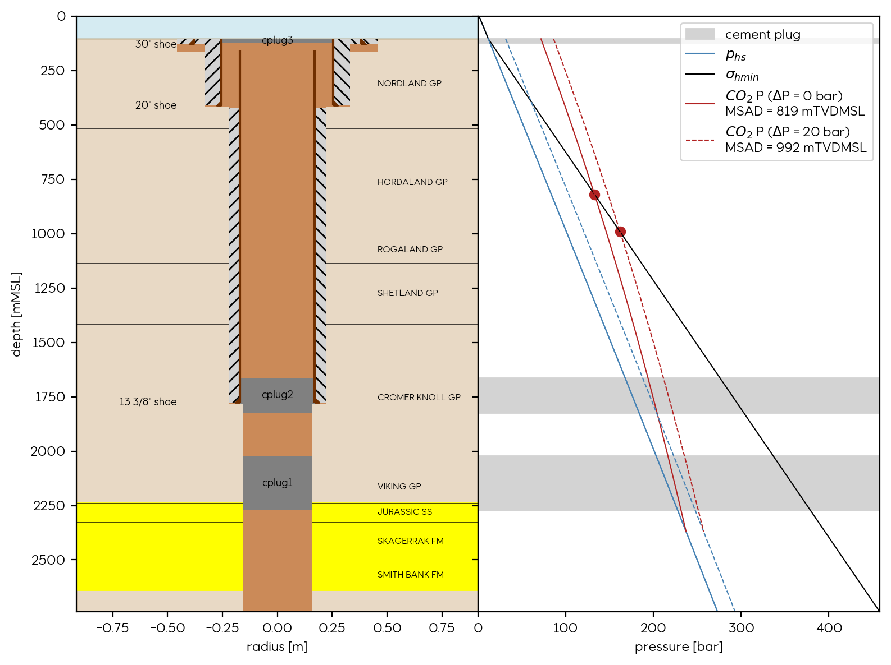
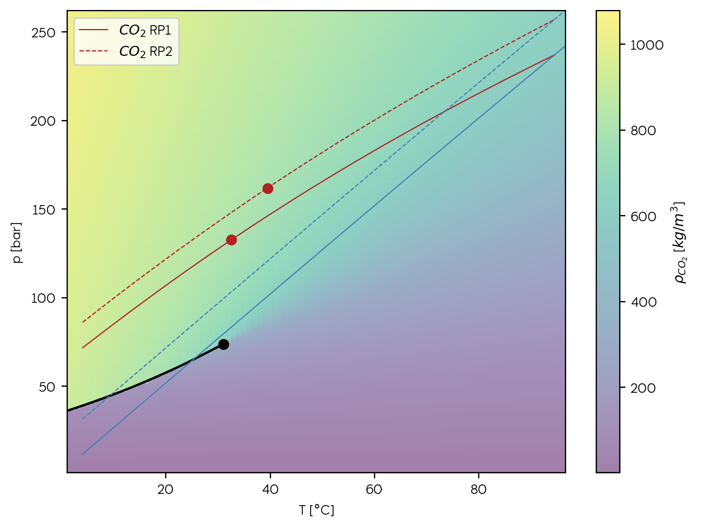
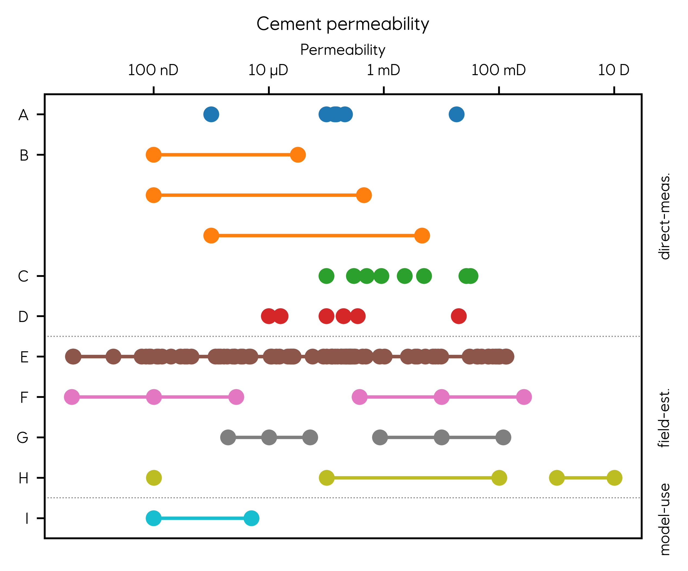

Pre‐processing and Preliminary Assessment
The SCREEN scripts facilitate preliminary analysis by generating two main outputs from the input data:
- A wellbore schematic that integrates geological well tops from subsurface data.
- A pressure depth plot that models the pressure profile along the wellbore.
Users provide input data in CSV or YAML format, which includes the following required parameters:
well_header: General well information such aswell_name,well_rkb,sf_depth_msl,well_td_rkb,sf_temp, andgeo_tgrad.drillingtable: Interval data for hole sections with top and bottom depths and diameters.casing_cementtable: Casing and cement records by top and bottom depth, inner diameter, and cement top (TOC) and bottom (BOC) depths. Ashoeflag and apermeabilityvalue are included.barrierstable: Depths of cement or mechanical plugs with apermeability` value for modeling.geologytable`: Geological unit tops, names, and a reservoir indicator. Overburden flow units must be tagged as reservoirs.reservoir_pressure: (to be deprecated) Reference for pressure deviations at the reservoir level.co2_datum: Depth of the expected base of the gas column, indicating aquifer pressure conditions.
Examples in the test_data folder can be used as templates for structuring the data. The pflotran_gap notebook serves as a reference guide to execute the workflow. The initial step involves using the Well data class to construct the well object:
my_well = Well(header = well_csv['well_header'],
drilling = well_csv['drilling'],
casings = well_csv['casing_cement'],
geology = well_csv['geology'],
barriers = well_csv['barriers'],
barrier_perm = well_csv['barrier_permeability'],
co2_datum = well_csv['co2_datum'])
During this process, all inputs are converted to meters, and depth values are harmonized to be expressed in meters below mean sea level (mMSL). After this conversion, it is possible to generate a visualization of the wellbore schematic.
The Well object is then utilized to instantiate the Pressure class and create pressure profiles:
my_pressure = Pressure(header = well_csv['well_header'],
reservoir_P = well_csv['reservoir_pressure'],
co2_datum = well_csv['co2_datum'],
pvt_path = pvt_path)ΔP=ρ⋅g⋅dz, iteratively updating pressure and density over small depth increments. At each step, the new pressure is determined using the updated density and the known temperature gradient, continuing this process throughout the well's depth profile. The integration of differential equations for pressure and density calculations was initially performed using a conventional for loop, but has since been optimized by adopting the solve_ivp method from scipy.integrate, enhancing both efficiency and accuracy.
Once the Well and Pressure instances have been created, they can be visualized using the plot_sketch and plot_pressure functions. The plot_sketch function provides a schematic of the wellbore, while the plot_pressure function produces a pressure versus depth plot.
 Figure 1: Combined visualization of wellbore schematic and pressure depth plot.
Additionally, the plot_pt function allows for the visualization of profiles in a Pressure-Temperature plot, which includes phase boundaries and background coloring to indicate fluid density changes.

Figure 2: Pressure profile from Pressure instance displayed in a Pressure-Temperature Plot with phase boundaries and fluid density as background color.
Permeability Handling
Although not used in these visualizations, the data structure used to initialize the Well class contains a handle to store permeability values for both the cement bond (casing_cement) and cement plugs (barriers). These values are estimates provided by the user and are subject to significant uncertainty due to factors such as cement quality, curing defects, or fractures, and can vary across orders of magnitude. Users are responsible for providing realistic permeability estimates, drawing on professional judgment and available literature in the absence of concrete data.
Flow rates through cement barriers are computed via Darcy’s law using an effective permeability value, which describes the permeability of the entire barrier medium. This effective permeability is higher than the intrinsic permeability of the cement, as it incorporates possible flow paths through cracks and mud channels within the cement. The Hagen-Poiseuille law can be applied to calculate the flow behavior of such composite materials (i.e., cemented pipe/annulus with microannulus) using an equivalent Darcy permeability for laminar flow. The effective permeability of the cemented section, including the microannulus, is obtained by taking the area-weighted averages of the permeabilities of the various components. However, predicting the appropriate microannulus assumptions based on legacy well files can be challenging. The effective permeability of “real-life” cement can vary widely, from microDarcy values for well-cured cement to several darcies for degraded cement. Fortunately, several studies provide estimates of effective well permeabilities based on direct measurements, back-calculation of observed leaking rates, or theoretical studies and modeling tools [1].
 Figure 3: Range of effective permeability in cement materials. Laboratory-Measured: A[2], B[3], C[4], D[5]. Field-Estimated: E[6], F[7], G[8], H[9]. Used for Modeling: I[10].
Limitations
- The wellbore schematic does not have functionalities to represent internal tubing, casing perforations or multiple discrete cemented sections.
- Identified overburden flow units should be labeled as reservoirs in the input data.
- The magnitude of cement permeability is an unconstrained and uncertain parameter.
- The estimation of fluid pressure using the
Pressureclass is not a full-fledged simulation but a numerical approach that approximates shut-in pressures or a system in equilibrium. It should not be confused with dynamic simulation models that account for transient conditions and fluid flow in the reservoir and wellbore.
References
-
Torsæter, M., Bello-Palacios, A., Borgerud, L. K., Nygård, O.-K., Frost, T. K., Hofstad, K. H., & Andrews, J. S. (2024). Evaluating Legacy Well Leakage Risk in CO2 Storage. SSRN Electronic Journal. https://doi.org/10.2139/ssrn.5062896
-
Beltrán-Jiménez, K., Gardner, D., Kragset, S., Gebremariam, K. F., Reales, O. A. M., Minde, M. W., de Souza, M. I. L., Aasen, J. A., Skadsem, H. J., & Delabroy, L. (2022). Cement properties characterization from a section retrieved from an oil production well after 33 years of downhole exposure. Journal of Petroleum Science and Engineering, 208, 109334. https://doi.org/10.1016/j.petrol.2021.109334
-
Gasda, S. E., Celia, M. A., Wang, J. Z., & Duguid, A. (2013). Wellbore Permeability Estimates from Vertical Interference Testing of Existing Wells. Energy Procedia, 37, 5673-5680. https://doi.org/10.1016/j.egypro.2013.06.489
-
Crow, W., Carey, J. W., Gasda, S., Brian Williams, D., & Celia, M. (2010). Wellbore integrity analysis of a natural CO2 producer. International Journal of Greenhouse Gas Control, 4(2), 186-197. https://doi.org/10.1016/j.ijggc.2009.10.010
-
Carey, J. W., Wigand, M., Chipera, S. J., WoldeGabriel, G., Pawar, R., Lichtner, P. C., Wehner, S. C., Raines, M. A., & Guthrie, G. D. (2007). Analysis and performance of oil well cement with 30 years of CO2 exposure from the SACROC Unit, West Texas, USA. International Journal of Greenhouse Gas Control, 1(1), 75-85. https://doi.org/10.1016/S1750-5836(06)00004-1
-
Kang, M., Baik, E., Miller, A. R., Bandilla, K. W., & Celia, M. A. (2015). Effective Permeabilities of Abandoned Oil and Gas Wells: Analysis of Data from Pennsylvania. Environmental Science & Technology, 49(7), 4757-4764. https://doi.org/10.1021/acs.est.5b00132
-
Carey, J. W. (2018). Probability distributions for effective permeability of potentially leaking wells at CO2 sequestration sites. Los Alamos National Lab.(LANL), Los Alamos, NM (United States). https://doi.org/10.18141/1433164
-
Godoy, R., Fontan, M., Capra, B., Kvalsund, R., & Poupard, O. (2015). Well Integrity Support by Extended Cement Evaluation - Numerical Modeling of Primary Cement Jobs. Abu Dhabi International Petroleum Exhibition and Conference. https://doi.org/10.2118/177612-MS